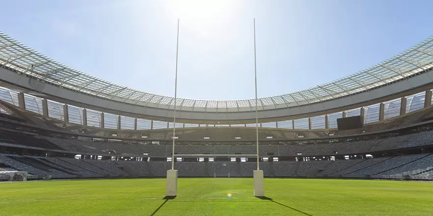
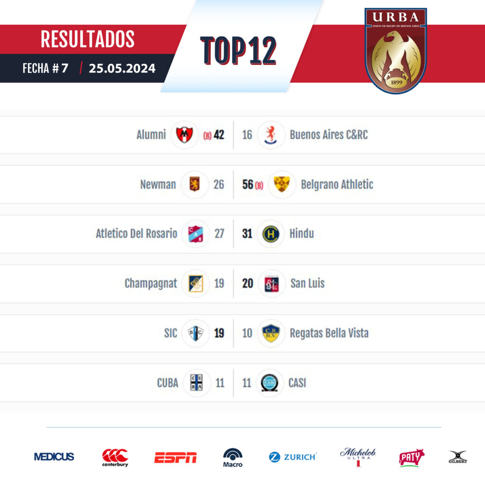

Última fecha Top 12
Cambio de horario por Los Pumas
Tanto el 13 de julio como el 31 de agosto, la Unión de Rugby de Buenos Aires decidió reprogramar las Divisiones Superiores de todas sus categorías. ¿El motivo? Los partidos que jugarán Los Pumas de local por la ventana internacional de julio ante Francia en el Estadio José Amalfitani y el encuentro por el Rugby Championship frente a Australia en el Estadio UNO de La Plata.
Circular mediante, la URBA comunicó el cambio que impactará sobre el URBA Top 12 Copa Macro presentada por Zurich, Primera A, B, C, Segunda, Tercera y Desarrollo.
Cambio de fecha: los partidos originalmente programados para el día 13 de julio de 2024 se jugarán el domingo 14 de julio en sus horarios habituales.
Cambio de horario: los partidos originalmente programados par el día 31 de agosto de 2024 se jugarán a las 14hs (Superior), 12:30hs (Intermedias) y 10:45hs o 9:15hs (Preintermedias)
Quiénes somos
Somos un grupo de amigos que formamos un programa de radio en 2016, enfocándonos en el rugby nacional e internacional, y otros deportes. Podés escucharnos los sábados de 13 a 14 horas.
Ir al sitio web de la URBA:

Efemérides
Recordá el gran triunfo de Los Pumas vs Nueva Zelanda del 2022 por 25-18 acá: